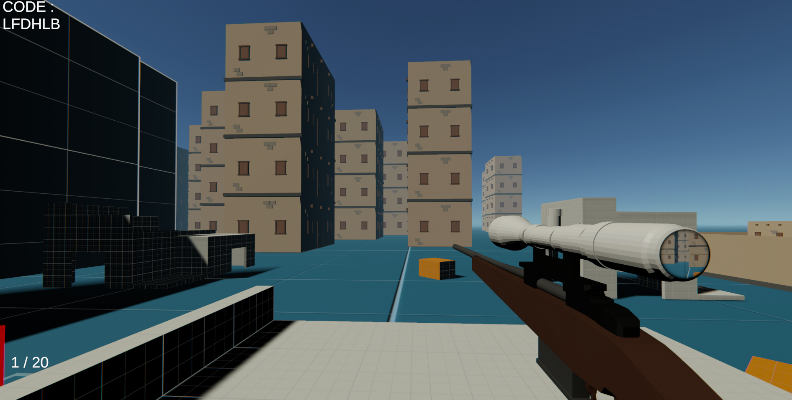
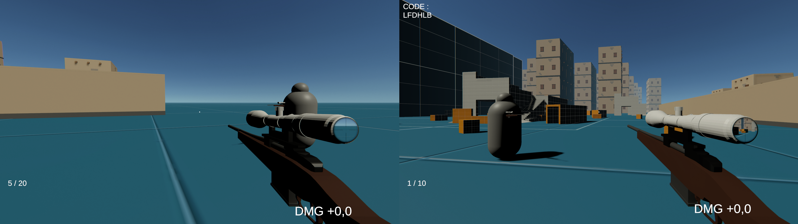
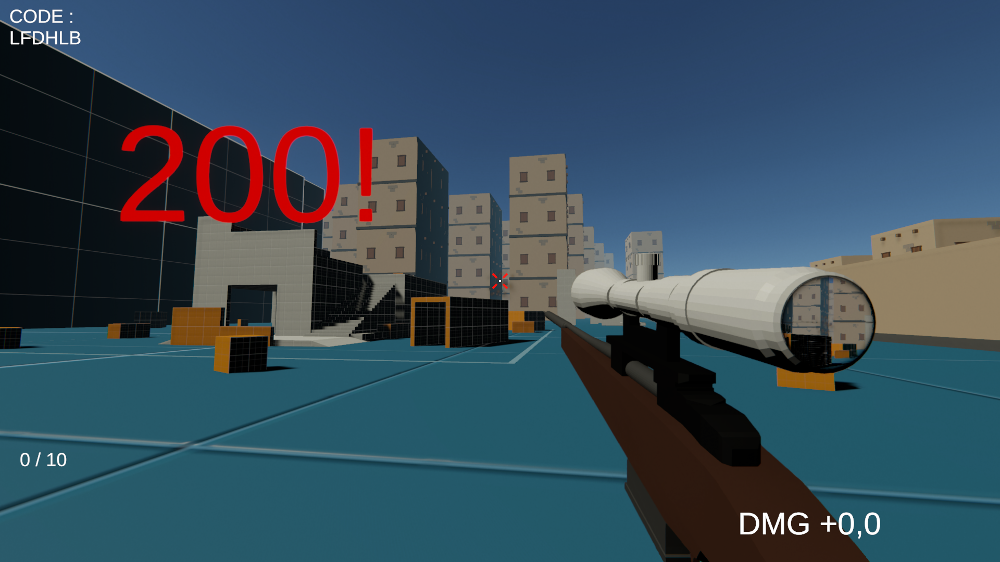

Prototype FPS Multijoueur
Prototype de FPS nerveux multijoueur créé pour maîtriser l'architecture Unity et le Netcode.
Ce projet est un prototype de FPS (First Person Shooter) multijoueur "client-hosted", développé en C# avec Unity. L'objectif principal était l'apprentissage approfondi de l'architecture Unity et des problématiques réseaux complexes. Réalisé en binôme via GitHub, il m'a permis de développer des compétences solides en collaboration technique.
Stack Technique & Défis
- Netcode & Synchro : Implémentation de lag compensation et d'un rewind buffer pour assurer que les tirs touchent leur cible correctement (hit registration) malgré la latence.
- Architecture : Gestion des RPCs (Remote Procedure Calls) optimisée pour minimiser les paquets réseaux.
- Outils 3D : Utilisation de Blender pour la modélisation des armes.
- IA Assistant : Utilisation proactive de l'IA pour accélérer la montée en compétence sur le C# et les patterns Unity.



Scroll pour voir plus